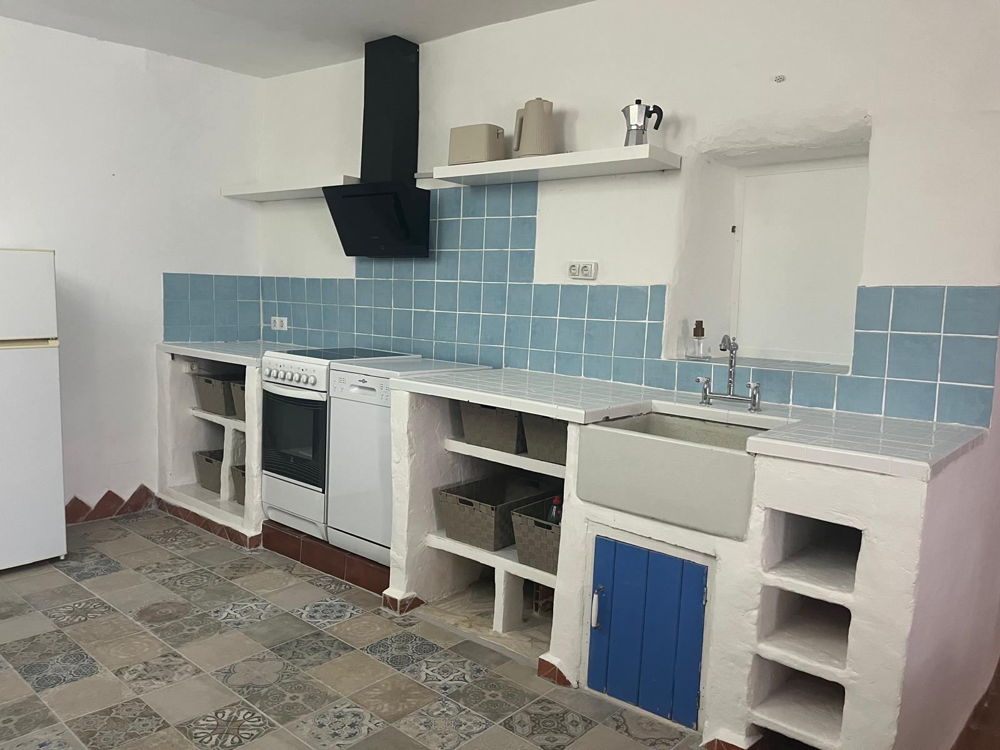
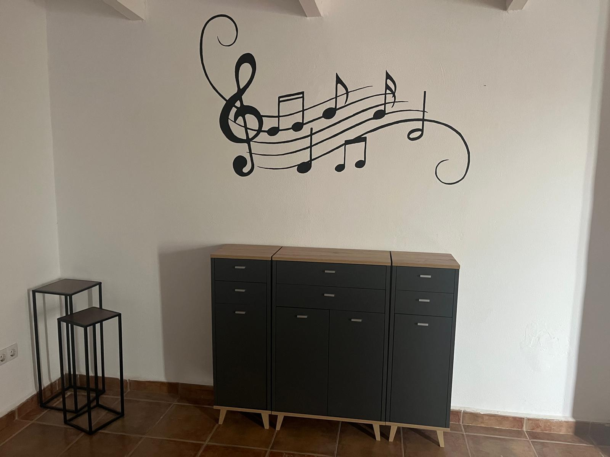

Foto-impressie
Een kijkje in en rondom ons appartement in Las Pocicas.








Sfeervol Spaans vakantieappartement met zwembad en panoramisch uitzicht over de bergen van Almería (Albox, Andalusië).
Controleer beschikbaarheidOntsnap aan de drukte en ervaar het echte Spaanse buitenleven in Las Pocicas, op slechts 10 minuten rijden van het levendige stadje Albox.
Ons authentiek Spaanse appartement combineert sfeervolle details — zoals handgemaakte tegels en balkenplafonds — met modern comfort. Vanaf het zonnige terras met balustrade en het zwembad heb je een weids uitzicht over de vallei en bergen.
De ruime woonkeuken is voorzien van onder andere een kookplaat met oven, vaatwasser en koel-vriescombinatie. In de woonkamer zorgt de airconditioning voor aangename koelte in de zomer en warmte in de winter.
Een kijkje in en rondom ons appartement in Las Pocicas.


De ideale uitvalsbasis tussen de bergen van het binnenland en de Middellandse Zee.
Las Pocicas & Albox: In het dorp zelf vind je rust, wandelroutes door amandel- en olijfboomgaarden en een lokale bar. Op 10 minuten ligt Albox met supermarkten, restaurants, terrasjes en een wekelijkse markt op dinsdag.
Kust & Natuur: Binnen 35 tot 45 minuten sta je op de brede zandstranden van Vera Playa, Garrucha of het witte bergdorp Mojácar. Ook het natuurpark Cabo de Gata en de stad Granada zijn goed bereikbaar.
Transparante prijzen zonder verborgen commissies wanneer je direct bij ons boekt.
| Seizoen | Periode | Prijs per nacht | Wees voorzichtig met code. Prijs per week LaagseizoenNovember – Maart (excl. feestdagen)€ 55€ 350MiddenseizoenApril – Juni & September – Oktober€ 70€ 450HoogseizoenJuli – Augustus€ 90€ 595 * Eindschoonmaak: € 50 per verblijf. Borg: € 150. Overwinteren (vanaf 4 weken) op aanvraag tegen speciaal tarief. Beschikbaarheid & Aanvraag Vul je gewenste data in. We reageren meestal binnen enkele uren persoonlijk op je aanvraag. Actuele Beschikbaarheidskalender [Plak hier later de embed-code van jullie Bookingmood-, Smoobu- of Airbnb-kalender zodat gasten direct vrije data zien.] Voor- en achternaam * E-mailadres * Aankomstdatum * Vertrekdatum * Aantal gasten 1234 Vragen of opmerkingen Aanvraag direct versturen © 2026 Casa Las Pocicas – Albox, Almería, Spanje (bis4u.eu) Registro Turismo Andalucía: VUT/AL/00000 info@bis4u.eu const translations = { nl: { nav_apt:"Het Appartement", nav_photos:"Foto's", nav_area:"Omgeving", nav_rates:"Tarieven", nav_book:"Aanvragen", hero_title:"Geniet van rust, zon en uitzicht in Las Pocicas", hero_sub:"Sfeervol Spaans vakantieappartement met zwembad en panoramisch uitzicht over de bergen van Almería (Albox, Andalusië).", hero_btn:"Controleer beschikbaarheid", hl_1_title:"Zwembad & Terras", hl_1_sub:"Met ligbedden & schaduw", hl_2_title:"Panoramisch Uitzicht", hl_2_sub:"Over de olijfgaarden & bergen", hl_3_title:"Authentiek & Compleet", hl_3_sub:"Met airco & vaatwasser", hl_4_title:"35 min. van zee", hl_4_sub:"Stranden van Vera & Mojácar", apt_title:"Welkom in ons appartement", apt_sub:"Ontsnap aan de drukte en ervaar het echte Spaanse buitenleven in Las Pocicas, op slechts 10 minuten rijden van het levendige stadje Albox.", apt_about_title:"Over het verblijf", apt_about_p1:"Ons authentiek Spaanse appartement combineert sfeervolle details — zoals handgemaakte tegels en balkenplafonds — met modern comfort. Vanaf het zonnige terras met balustrade en het zwembad heb je een weids uitzicht over de vallei en bergen.", apt_about_p2:"De ruime woonkeuken is voorzien van onder andere een kookplaat met oven, vaatwasser en koel-vriescombinatie. In de woonkamer zorgt de airconditioning voor aangename koelte in de zomer en warmte in de winter.", apt_feat_title:"Voorzieningen", feat_1:"Zwembad met ligbedden", feat_2:"Terras met bergzicht", feat_3:"Airconditioning (koelen & verwarmen)", feat_4:"Keuken met oven & vaatwasser", feat_5:"Gratis Wi-Fi", feat_6:"Gratis parkeren", feat_7:"Handdoeken & beddengoed", feat_8:"TV & ruime eethoek", photos_title:"Foto-impressie", photos_sub:"Een kijkje in en rondom ons appartement in Las Pocicas.", area_title:"Ontdek Las Pocicas & Omgeving", area_sub:"De ideale uitvalsbasis tussen de bergen van het binnenland en de Middellandse Zee.", area_1_title:"In de directe buurt", area_1_text:"Las Pocicas & Albox: In het dorp zelf vind je rust, wandelroutes door amandel- en olijfboomgaarden en een lokale bar. Op 10 minuten ligt Albox met supermarkten, restaurants, terrasjes en een wekelijkse markt op dinsdag.", area_2_title:"Dagtrips & Stranden", area_2_text:"Kust & Natuur: Binnen 35 tot 45 minuten sta je op de brede zandstranden van Vera Playa, Garrucha of het witte bergdorp Mojácar. Ook het natuurpark Cabo de Gata en de stad Granada zijn goed bereikbaar.", rates_title:"Tarieven & Seizoenen", rates_sub:"Transparante prijzen zonder verborgen commissies wanneer je direct bij ons boekt.", th_season:"Seizoen", th_period:"Periode", th_night:"Prijs per nacht", th_week:"Prijs per week", s_low:"Laagseizoen", p_low:"November – Maart (excl. feestdagen)", s_mid:"Middenseizoen", p_mid:"April – Juni & September – Oktober", s_high:"Hoogseizoen", p_high:"Juli – Augustus", rates_note:"* Eindschoonmaak: € 50 per verblijf. Borg: € 150. Overwinteren (vanaf 4 weken) op aanvraag tegen speciaal tarief.", book_title:"Beschikbaarheid & Aanvraag", book_sub:"Vul je gewenste data in. We reageren meestal binnen enkele uren persoonlijk op je aanvraag.", cal_title:"Actuele Beschikbaarheidskalender", cal_desc:"[Plak hier later de embed-code van jullie Bookingmood-, Smoobu- of Airbnb-kalender zodat gasten direct vrije data zien.]", lbl_name:"Voor- en achternaam *", lbl_email:"E-mailadres *", lbl_checkin:"Aankomstdatum *", lbl_checkout:"Vertrekdatum ", lbl_guests:"Aantal gasten", lbl_msg:"Vragen of opmerkingen", btn_submit:"Aanvraag direct versturen" }, en: { nav_apt:"The Apartment", nav_photos:"Photos", nav_area:"Area", nav_rates:"Rates", nav_book:"Book Now", hero_title:"Enjoy peace, sun and mountain views in Las Pocicas", hero_sub:"Charming Spanish holiday apartment with swimming pool and panoramic views over the mountains of Almería (Albox, Andalusia).", hero_btn:"Check availability", hl_1_title:"Pool & Terrace", hl_1_sub:"With sun loungers & shade", hl_2_title:"Panoramic Views", hl_2_sub:"Over olive groves & mountains", hl_3_title:"Authentic & Complete", hl_3_sub:"With A/C & dishwasher", hl_4_title:"35 min. to coast", hl_4_sub:"Beaches of Vera & Mojácar", apt_title:"Welcome to our apartment", apt_sub:"Escape the crowds and experience authentic Spanish outdoor living in Las Pocicas, just a 10-minute drive from the lively town of Albox.", apt_about_title:"About the stay", apt_about_p1:"Our authentic Spanish apartment combines charming details — such as handmade tiles and beamed ceilings — with modern comfort. From the sunny terrace and swimming pool you enjoy sweeping views over the valley and mountains.", apt_about_p2:"The spacious kitchen is equipped with a cooker with oven, dishwasher, and fridge-freezer. In the living room, air conditioning keeps you cool in summer and warm in winter.", apt_feat_title:"Amenities", feat_1:"Swimming pool with loungers", feat_2:"Terrace with mountain views", feat_3:"Air conditioning (cooling & heating)", feat_4:"Kitchen with oven & dishwasher", feat_5:"Free Wi-Fi", feat_6:"Free parking", feat_7:"Towels & bed linen included", feat_8:"TV & spacious dining area", photos_title:"Photo Gallery", photos_sub:"A look inside and around our apartment in Las Pocicas.", area_title:"Discover Las Pocicas & Surroundings", area_sub:"The ideal base between the inland mountains and the Mediterranean Sea.", area_1_title:"In the immediate area", area_1_text:"Las Pocicas & Albox: The village offers peace, walking trails through almond and olive groves, and a local bar. Just 10 minutes away is Albox with supermarkets, restaurants, and a weekly Tuesday market.", area_2_title:"Day trips & Beaches", area_2_text:"Coast & Nature: Within 35 to 45 minutes you reach the sandy beaches of Vera Playa, Garrucha, or the whitewashed village of Mojácar. Cabo de Gata Natural Park and Granada are also great day trips.", rates_title:"Rates & Seasons", rates_sub:"Transparent pricing with no hidden booking fees when you book directly with us.", th_season:"Season", th_period:"Period", th_night:"Per night", th_week:"Per week", s_low:"Low season", p_low:"November – March (excl. holidays)", s_mid:"Mid season", p_mid:"April – June & September – October", s_high:"High season", p_high:"July – August", rates_note:" Final cleaning: € 50 per stay. Security deposit: € 150. Long winter stays (4+ weeks) available at special rates.", book_title:"Availability & Inquiry", book_sub:"Enter your preferred dates. We usually respond personally within a few hours.", cal_title:"Live Availability Calendar", cal_desc:"[Paste your Bookingmood, Smoobu, or Airbnb calendar embed code here so guests can see available dates.]", lbl_name:"Full name *", lbl_email:"Email address *", lbl_checkin:"Check-in date *", lbl_checkout:"Check-out date *", lbl_guests:"Number of guests", lbl_msg:"Questions or comments", btn_submit:"Send inquiry directly" }, es: { nav_apt:"El Apartamento", nav_photos:"Fotos", nav_area:"Entorno", nav_rates:"Tarifas", nav_book:"Reservar", hero_title:"Disfruta del sol, la paz y las vistas en Las Pocicas", hero_sub:"Acogedor apartamento vacacional con piscina y vistas panorámicas a las montañas de Almería (Albox, Andalucía).", hero_btn:"Consultar disponibilidad", hl_1_title:"Piscina y Terraza", hl_1_sub:"Con tumbonas y sombra", hl_2_title:"Vistas Panorámicas", hl_2_sub:"A olivares y montañas", hl_3_title:"Auténtico y Completo", hl_3_sub:"Con aire acond. y lavavajillas", hl_4_title:"A 35 min. del mar", hl_4_sub:"Playas de Vera y Mojácar", apt_title:"Bienvenidos a nuestro apartamento", apt_sub:"Escapa del bullicio y vive la auténtica vida española en Las Pocicas, a solo 10 minutos en coche de Albox.", apt_about_title:"Sobre el alojamiento", apt_about_p1:"Nuestro apartamento español combina detalles encantadores — como azulejos artesanales y techos con vigas — con comodidad moderna. Desde la soleada terraza y la piscina disfrutarás de amplias vistas al valle y las montañas.", apt_about_p2:"La amplia cocina está equipada con cocina con horno, lavavajillas y frigorífico. En el salón, el aire acondicionado ofrece frescor en verano y calidez en invierno.", apt_feat_title:"Equipamiento", feat_1:"Piscina con tumbonas", feat_2:"Terraza con vistas a la montaña", feat_3:"Aire acondicionado (frío y calor)", feat_4:"Cocina con horno y lavavajillas", feat_5:"Wi-Fi gratuito", feat_6:"Aparcamiento gratuito", feat_7:"Toallas y ropa de cama", feat_8:"TV y amplio comedor", photos_title:"Galería de Fotos", photos_sub:"Un vistazo por dentro y por fuera de nuestro apartamento en Las Pocicas.", area_title:"Descubre Las Pocicas y Alrededores", area_sub:"La base ideal entre las montañas del interior y el mar Mediterráneo.", area_1_title:"En los alrededores", area_1_text:"Las Pocicas y Albox: En el pueblo encontrarás paz, rutas de senderismo entre almendros y olivos y un bar local. A 10 minutos está Albox con supermercados, restaurantes y mercado semanal los martes.", area_2_title:"Excursiones y Playas", area_2_text:"Costa y Naturaleza: En 35 a 45 minutos llegarás a las playas de Vera Playa, Garrucha o el pueblo blanco de Mojácar. El Parque Natural Cabo de Gata y Granada también están cerca.", rates_title:"Tarifas y Temporadas", rates_sub:"Precios transparentes sin comisiones ocultas reservando directamente con nosotros.", th_season:"Temporada", th_period:"Periodo", th_night:"Precio por noche", th_week:"Precio por semana", s_low:"Temporada baja", p_low:"Noviembre – Marzo (exc. festivos)", s_mid:"Temporada media", p_mid:"Abril – Junio y Septiembre – Octubre", s_high:"Temporada alta", p_high:"Julio – Agosto", rates_note:"* Limpieza final: 50 € por estancia. Fianza: 150 €. Estancias largas en invierno (más de 4 semanas) bajo petición.", book_title:"Disponibilidad y Solicitud", book_sub:"Introduce tus fechas deseadas. Respondemos personalmente en pocas horas.", cal_title:"Calendario de Disponibilidad", cal_desc:"[Pega aquí el código de tu calendario de Bookingmood, Smoobu o Airbnb para mostrar las fechas libres.]", lbl_name:"Nombre y apellidos *", lbl_email:"Correo electrónico *", lbl_checkin:"Fecha de entrada *", lbl_checkout:"Fecha de salida *", lbl_guests:"Número de huéspedes", lbl_msg:"Preguntas o comentarios", btn_submit:"Enviar solicitud" } }; function setLanguage(lang, btn) { document.querySelectorAll('.lang-btn').forEach(b => b.classList.remove('active')); btn.classList.add('active'); document.documentElement.lang = lang; document.querySelectorAll('[data-i18n]').forEach(el => { const key = el.getAttribute('data-i18n'); if (translations[lang] && translations[lang][key]) el.textContent = translations[lang][key]; }); } *(Let op: als je foto's op je computer eindigen op `.jpeg` of `.png` in plaats van `.jpg`, pas dan even `.jpg` in de code aan naar `.jpeg` of `.png`, anders worden ze niet weergegeven.)*
|---|